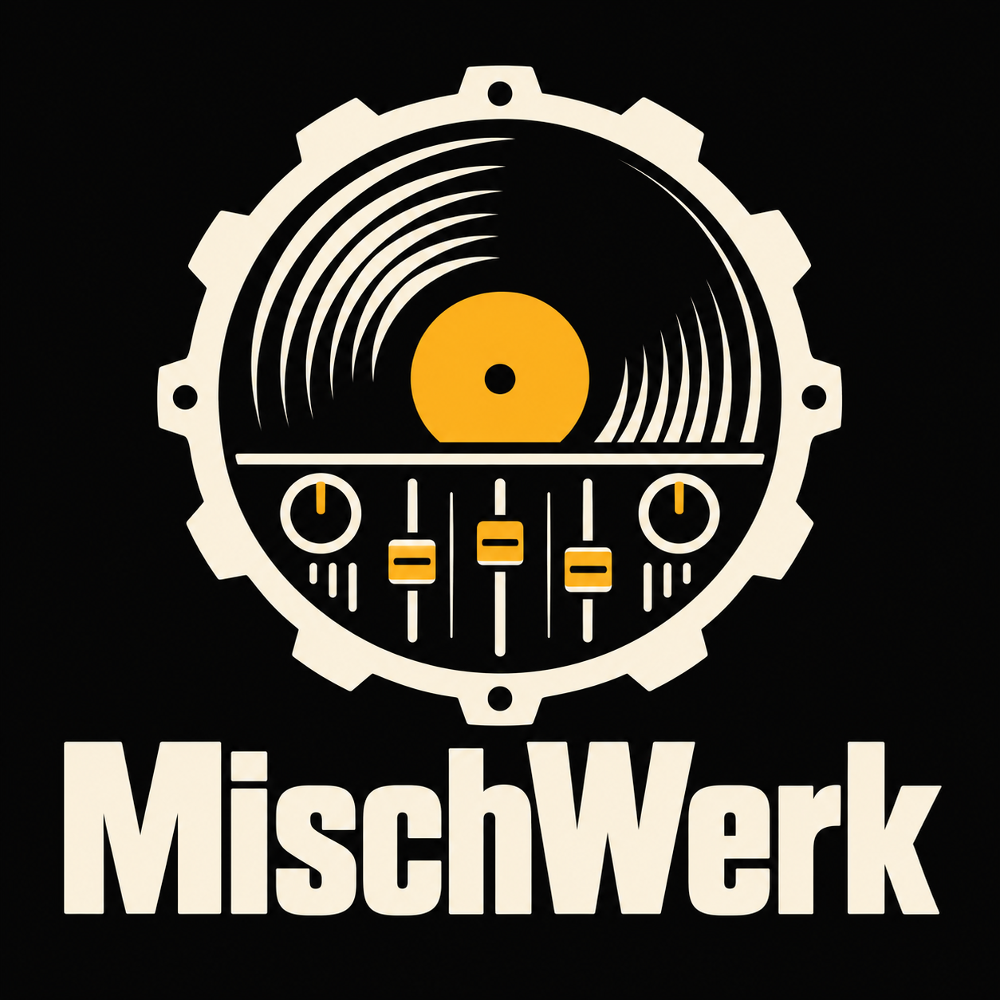

Kein Studiozugriff
Das Moderationsmenü ist nur für berechtigte Moderatoren verfügbar.
Keine Berechtigung
Nur der Channelinhaber kann Radiomoderatoren verwalten.
MischWerk konnte nicht geladen werden. Bitte öffne die App erneut mit /mischwerk. Falls das Problem bleibt, muss der vollständige App-Upload geprüft werden.

Das Moderationsmenü ist nur für berechtigte Moderatoren verfügbar.
Nur der Channelinhaber kann Radiomoderatoren verwalten.